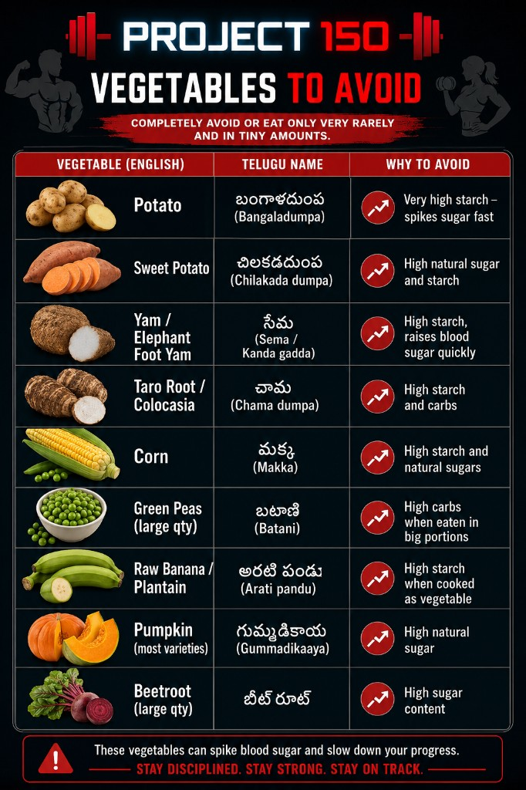

Allowed Vegetables
Low-sugar vegetables with Telugu names and usage notes.
Tap any card to zoom. These visuals are the family’s quick reference for meal decisions and food discipline.

Low-sugar vegetables with Telugu names and usage notes.

Main staples and strict portion-size guidelines.

Core daily protein sources for strength and stability.

Original alternate version retained for reference and comparison.

Practical small-portion choices for daily routine.

High-starch, blood-sugar-spiking foods to minimize strictly.

Alternate visual version kept as a legacy reference chart.

Older version archived for continuity with early Project 150 updates.